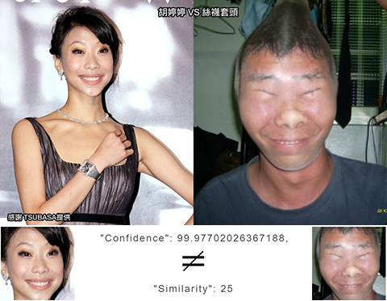

隨著Apple X 的FaceID 的推出，人臉識別又熱了起來，網路上出現一些議題及玩笑，像是:
剛好 Amazon 的 rekognition 裡頭有現成的人臉相似度比對的功能，拿來試試試好了
郭彥甫 V.S 郭彥均: 相似度 92%, 87% 。同卵雙生真的會像到一個不行
劉詩詩 V.S 劉亦菲: 相似度 89%
梁赫群 V.S 朗朗: 相似度 89%
AV 男優 V.S 浩子: 相似度 87% ，真的不能再高了
曹格 V.S 曾雅妮: 相似度 84%
格達費_豬哥亮: 相似度 83%
蕭亞瑄 V.S 溫嵐: 相似度 82%
陳漢典 V.S 光良: 相似度 78%
宋少卿 V.S 鈕承澤 V.S 屈中恆: 相似度 78%, 68%, 62%
孫燕姿 V.S 黃義達: 相似度 75%
戶愚呂弟 V.S 姚明: 相似度 74%

麥克戴蒙 V.S 馬克華柏格: 相似度 74%
李毓芬 V.S 徐若瑄: 相似度 71%
王祖賢 V.S 朴恩惠: 相似度 71%

江祖平 V.S 廣末涼子: 相似度 70%
品冠 V.S 冠佑: 相似度 68%
K.D V.S Jimmy Fox: 相似度 68%
盧廣仲 V.S 包聖美: 相似度 61%
迅猛龍 V.S 楊淑貞: 相似度 59%
張鎮嶽 V.S LBJ: 相似度 57%
黎明 V.S林國斌: 相似度 54%
朱立倫 V.S 路人: 相似度 54%
阿信 V.S 胡瓜: 相似度 49%, 45%
大澤隆夫 V.S 賴清德: 相似度 45%
馬英九 V.S 英九妹: 相似度 43%
館長 V.S 愛子公主: 相似度 40%
豆花妹 V.S 王彩樺: 相似度 29%
黃立行 V.S 吳佩慈: 相似度 27%
胡婷婷 V.S 絲襪套頭: 相似度 25% 
Kid V.S 高山峰: 相似度 23%
王世堅 V.S 鬼娃: 相似度 23%

王仁甫 V.S 麻美由真: 相似度 21%
Nono V.S Landry Fields: 相似度 20%
Niki Minaj V.S 歐漢聲: 相似度 15%
王紹緯 V.S Kobe: 相似度 5%
外勞 V.S 吳宗憲: 相似度: 相似度 1%
曲家瑞 V.S 克勞薩大人: 認不出克勞薩大人的臉，失敗!